Теория кинематического анализа робота
- 1. Цель эксперимента
- 2. Подключение оборудования
- 3. Знакомство с колёсами Меканум
- 4. Анализ движения колёс Меканум и определение направления
- 6. Комбинации установки колёс Меканум и анализ движения
- 7. Расположение колёс Меканум при установке
- 8. Итоговый способ установки
1. Цель эксперимента
Проанализировать кинематику робота на основе его конструктивных особенностей. Поскольку у реальных роботов есть конструктивные погрешности, а также такие факторы, как сопротивление и трение при движении, кинематика получается довольно сложной. Для простоты мы будем анализировать робота только в идеальных условиях.
2. Подключение оборудования
Как показано на рисунке ниже, плата управления STM32 имеет четыре встроенных интерфейса управления моторами с энкодером. Для этого требуется дополнительно подключить мотор с энкодером. Интерфейс управления моторами поддерживает моторы с энкодером типа 520. Поскольку энкодер требует высокого напряжения и тока, необходимо подключить батарею для питания.
Соответствие названий четырёх интерфейсов моторов: переднее левое колесо → M1, заднее левое колесо → M2, переднее правое колесо → M3, заднее правое колесо → M4.
Рядом с интерфейсом мотора нанесена подробная маркировка порядка проводов. В качестве примера рассмотрим мотор M1. M1+ и M1- — интерфейсы управления вращением мотора, GND и +3,3В — цепи питания энкодера, H1A и H1B — выводы обнаружения импульсов энкодера.
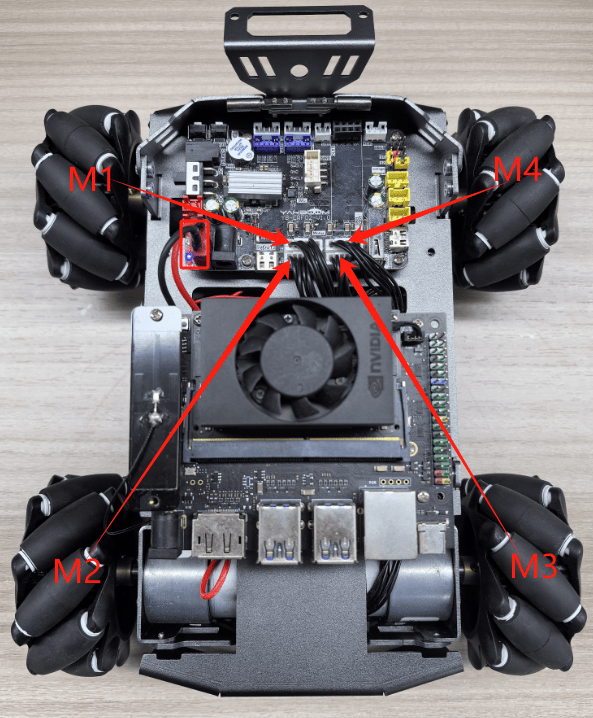
3. Знакомство с колёсами Меканум
В эпоху расцвета промышленного производства традиционное рулевое управление транспортных средств оказалось неудобным в некоторых условиях. Например, при сборке аэрокосмических компонентов использование традиционных транспортных средств для перемещения и сборки узлов требует значительных затрат труда, материалов и времени. Хотя точность ограничена долями миллиметра, любое смещение требует повторной калибровки. Для крупного сложного оборудования высокая эффективность даёт значительное преимущество перед конкурентами. Способ, позволяющий транспортному средству перемещаться поступательно и разворачиваться под любым углом без вращения самого корпуса, стал бы идеальным решением этой проблемы.
Только в 1973 году шведская компания Mecanum разработала более практичное и получившее широкое распространение решение — колесо Меканум, о котором мы сегодня и поговорим.
Колесо Меканум состоит из ступицы (хаба) и роликов, расположенных по её окружности. Ролики — это небольшие неприводные, свободно вращающиеся колёсики. Угол между осью ролика и осью ступицы составляет 45 градусов. Существует два типа колёс Меканум: A и B, представляющие собой зеркальные отражения друг друга; их также иногда называют левыми и правыми колёсами. Как правило, они маркируются на ступице символами A и B, либо L и R.
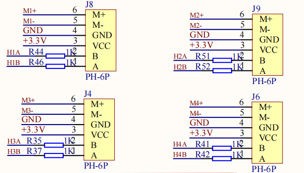
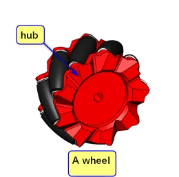
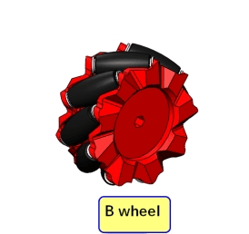
4. Анализ движения колёс Меканум и определение направления
Как упоминалось выше, есть два типа колёс: A и B. Если колесо A движется одновременно вперёд и вправо, то есть по диагонали вправо-вперёд, то, соответственно, оно же может двигаться назад и влево одновременно, то есть по диагонали влево-назад; аналогично, колесо B может двигаться по диагонали влево-вперёд и вправо-назад.
Если считать переднюю часть робота положительным направлением, то направление, при котором колесо движется вперёд, считается прямым вращением мотора, а направление, при котором колесо движется назад, — обратным вращением мотора. (Все последующие уроки будут объясняться именно в этой системе координат.)
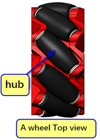
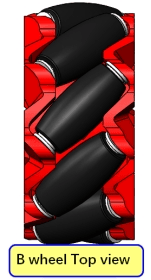
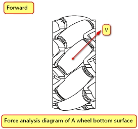
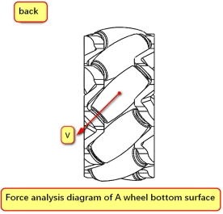
Рассмотрим колесо A в качестве примера. Ролик не может создавать силу движения вперёд в направлении своего качения, а также не может катиться в направлении оси ролика — он просто скользит по земле, создавая силу трения вдоль оси ролика, то есть направленную наклонно вправо-вперёд или влево-назад. Поэтому направление скорости колеса A — наклонно вправо-вперёд или влево-назад. Такой же анализ применим и к колесу B.
Согласно физике, изученной в школе, известно, что скорость можно разложить на ортогональные составляющие, а направление движения транспортного средства определяется суммарной скоростью всех четырёх колёс.
Тогда скорость колеса A можно разложить на составляющую вправо по одной оси и составляющую вперёд по перпендикулярной оси, либо на составляющую влево и составляющую назад.
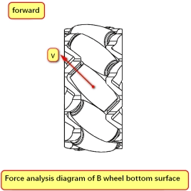
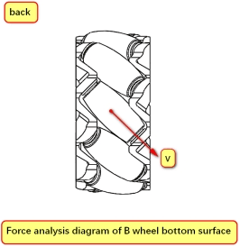
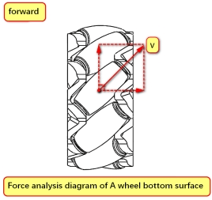
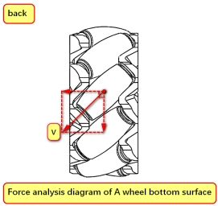
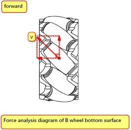
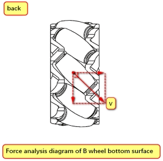
Таким образом, составляющие скорости колеса B являются зеркальным отражением составляющих скорости колеса A.
6. Комбинации установки колёс Меканум и анализ движения
Зная составляющие скорости колёс A и B, можно расположить четырёхколёсное шасси на колёсах Меканум в разных комбинациях: AAAA, BBBB, AABB и т. д.
Позволяют ли все комбинации получить полный диапазон движения?
Ниже мы приведём только один неправильный пример и один правильный, а остальные вы можете вывести самостоятельно (на самом деле их слишком много).
Пример ошибочного анализа [AAAA]
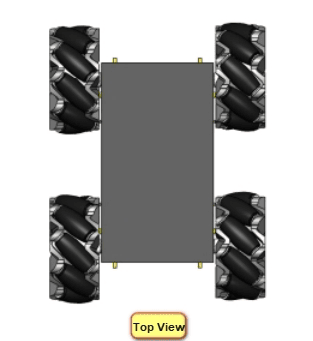
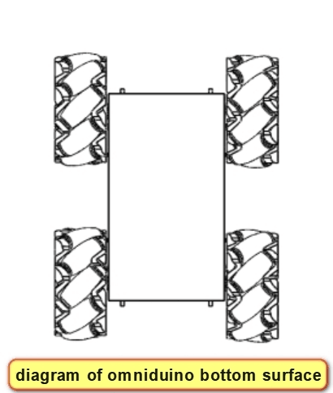
Может показаться, что это ненадёжный вариант, но давайте всё равно его проанализируем, поскольку на примере ошибки легче понять, что именно не так. Ранее мы объяснили, что составляющие скорости колеса A — это либо вперёд плюс вправо, либо назад плюс влево.
Когда все четыре колеса одновременно вращаются вперёд, у каждого колеса появляется составляющая скорости, направленная влево, из-за чего всё шасси одновременно смещается влево при движении вперёд; аналогично, при движении назад оно неизбежно сместится вправо, что делает такую схему непригодной для использования. Такое шасси будет неконтролируемо уводить в сторону, а это не то всенаправленное движение, которое нам нужно.
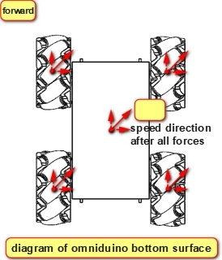
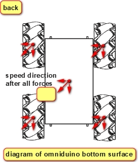
Правильное распределение колёс — [ABBA]
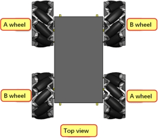
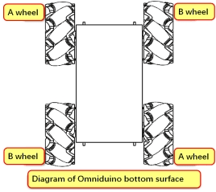
Когда все четыре колеса вращаются вперёд, колёса A и B взаимно компенсируют боковые составляющие скорости, оставляя только составляющую движения вперёд. Таким образом, шасси движется прямо вперёд без отклонения, и то же самое верно при движении назад.
Если колесо A вращается вперёд, а колесо B — назад, составляющие скорости вперёд и назад взаимно компенсируются, оставляя только составляющую движения вправо, и шасси перемещается горизонтально вправо.
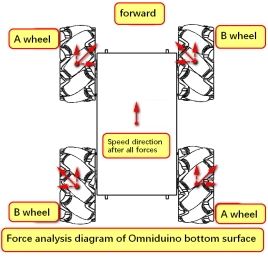
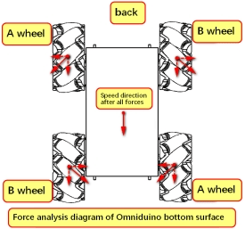
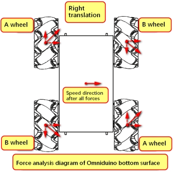
И наоборот, если колесо A вращается назад, а колесо B — вперёд, шасси перемещается горизонтально влево.
Наконец, если левые колёса шасси вращаются вперёд, а правые — назад, шасси разворачивается вправо; в противном случае шасси разворачивается влево.
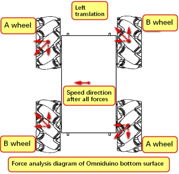
Кроме того, когда колесо A вращается вперёд, а колесо B остаётся неподвижным, шасси движется вправо-вперёд;
когда колесо A вращается назад, а колесо B остаётся неподвижным, шасси движется влево-назад.
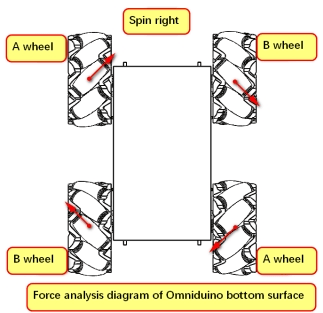
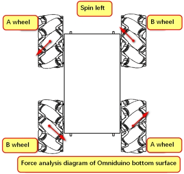
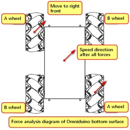
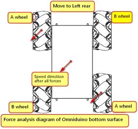
Соответственно, если колесо A остаётся неподвижным, а колесо B вращается вперёд, шасси движется влево-вперёд;
если колесо A остаётся неподвижным, а колесо B вращается назад, шасси движется вправо-назад.
Существуют также ещё четыре режима движения — вращение вокруг средней точки оси.
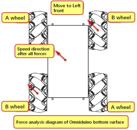
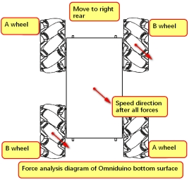
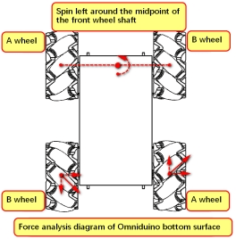
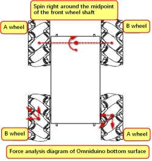
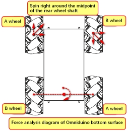
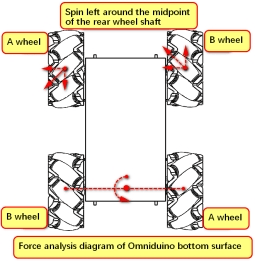
[Вопрос для размышления] Похожи ли описанные выше четыре ситуации на поступательное движение? Если два неподвижных колеса движутся как при поступательном перемещении, но со скоростью ниже, чем у двух других колёс, как будет двигаться шасси на колёсах Меканум?
7. Расположение колёс Меканум при установке
Выше мы рассмотрели комбинации установки колёс Меканум. При установке четырёх колёс Меканум также стоит учитывать некоторые особенности.
Фигуры, образуемые точками контакта четырёх колёс с землёй, в основном представляют собой квадраты и прямоугольники. Хотя встречаются и нестандартные формы, здесь мы разберём только квадраты и прямоугольники.
Квадрат: четыре колеса расположены в четырёх вершинах квадрата, что позволяет как поступательное движение, так и вращение. Однако из-за таких факторов, как форма и размеры шасси робота, такой способ установки, будучи идеальным, редко оказывается практически реализуемым.
Шасси, которое мы используем, имеет тщательно продуманную квадратную форму после установки колёс Меканум, что делает его наиболее близким к идеальной конфигурации шасси на колёсах Меканум.
Прямоугольник: вращение колёс создаёт момент вокруг вертикальной оси (рыскания), при этом плечо момента относительно велико. Это наиболее распространённый способ установки.
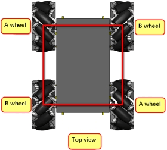
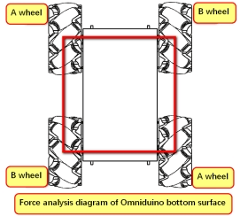
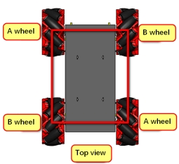
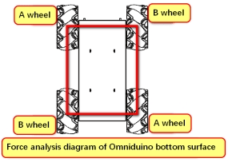
Сравнивая с традиционными транспортными средствами, можно заметить, что у обычных транспортных средств все колёса вращаются в одном направлении, тогда как при всенаправленном движении транспортного средства на колёсах Меканум, как было проанализировано выше, направление движения каждого колеса отличается. Поэтому для достижения истинного всенаправленного движения каждое колесо Меканум должно приводиться в движение отдельным мотором. Соответственно, требуется система управления, которая регулирует направление вращения и скорость каждого колеса.
Всенаправленные колёса (omni wheels) и колёса Меканум — два типа колёс, обычно используемых для реализации всенаправленного движения. Выше в основном были описаны способы движения и комбинации установки колёс Меканум. Всенаправленные колёса и колёса Меканум различаются по конструкции, механическим свойствам и кинематическим характеристикам. Основная причина этого — разный угол между осью ступицы и осью роликов. В таблице ниже приведены различия их кинематических и механических свойств.
Процесс расчёта приведён ниже, только для справки:
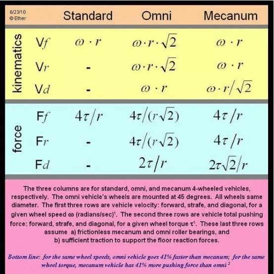
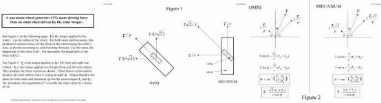
8. Итоговый способ установки
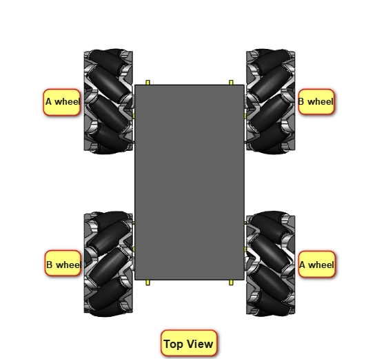